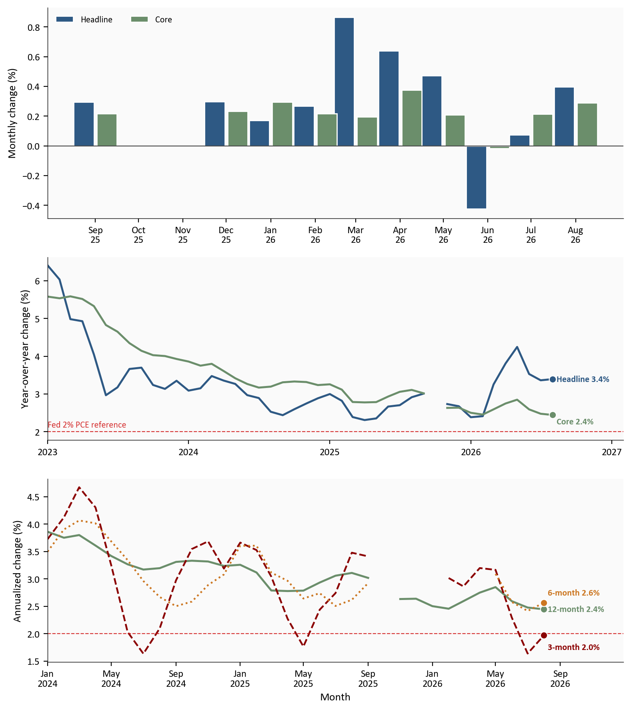
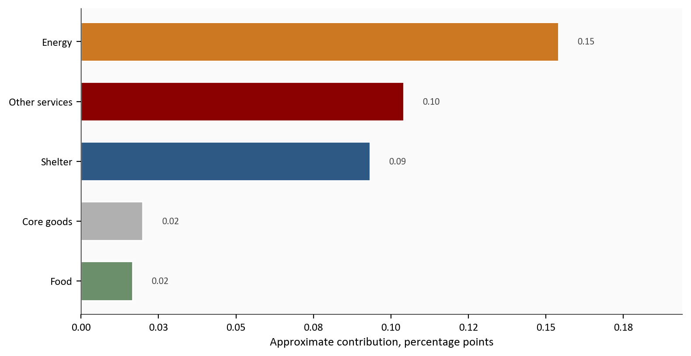
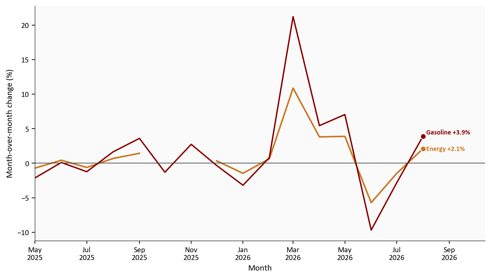
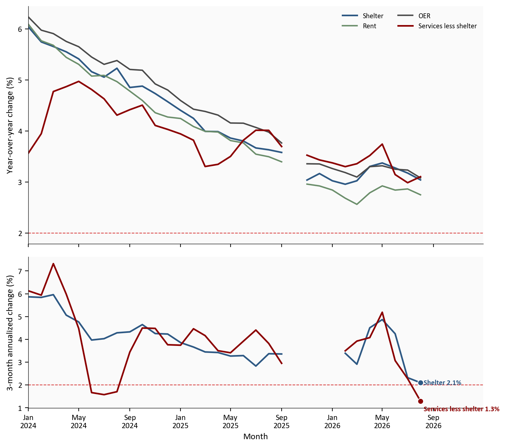

Headline CPI
+0.4%
month over month | 3.4% yearly
Core CPI
+0.3%
month over month | 2.4% yearly
Energy CPI
+2.1%
gasoline +3.9%
Shelter CPI
+0.3%
3.0% yearly
BLS CPI for August 2026 | released 9/11/2026
Yoram Gilboa
September 12, 2026
August consumer inflation turned back up after July’s soft reading. The Consumer Price Index for All Urban Consumers rose +0.4% from July on a seasonally adjusted basis, up from +0.1% the month before. Core CPI, which removes food and energy, rose +0.3%. The report does not settle the Federal Reserve’s next move, but it keeps inflation pressure in view just before the 9/15 to 9/16 meeting.
The annual picture was less dramatic. Headline CPI remained 3.4% above a year earlier, while core eased to 2.4% from 2.5%. That combination is the central message: energy reversed July’s decline, but the slower-moving core basket did not return to a comfortably low monthly pace.
The complete pipeline is included with this post:
scripts/01_fetch_data.py downloads validated FRED CPI indexes and the federal funds target range, and records official BLS Table 1 prints and weights.scripts/02_clean_data.py calculates monthly, yearly, and annualized rates. The formulas live there. Charts only plot the columns. It also checks rounded August values against BLS Table 1.scripts/04_compute_stats.py writes every prose and metric-card value to stats/summary_stats.json.Run the scripts in numeric order from this post directory, then render index.qmd. pandas handles the tables and matplotlib draws the figures.
CPI tracks price changes for goods and services bought by urban consumers. Seasonally adjusted (SA) data remove recurring calendar patterns for month-to-month comparisons. Not seasonally adjusted (NSA) data retain those patterns and underpin published 12-month rates. Core CPI excludes food and energy.
Shelter includes tenant rent, owners’ equivalent rent, lodging away from home, and related housing components. Owners’ equivalent rent (OER) estimates what homeowners would pay to rent a comparable home. Services less energy services excludes electricity and utility gas but includes shelter. Services less rent of shelter also removes the shelter aggregate. That last series is an official BLS aggregate. It is not identical to every market definition of supercore.
FRED has a published missing value for all-items and core CPI in 10/2025. Gasoline has a value that month, so the raw file is not empty. This post does not interpolate the gap. Monthly bars keep the calendar so that missing month, and the next month’s m/m rate that depends on it, appear as empty observations rather than adjacent months.
The contribution chart is a fixed-weight approximation: July relative importance times the August seasonally adjusted component change. Official CPI uses chained aggregation, so the pieces are not expected to reproduce the headline exactly.
BLS CPI for August 2026 | released 9/11/2026
The monthly reading changed more than the annual reading. Headline CPI accelerated by 0.3 percentage point from July, mainly because energy stopped subtracting from the index. Core also firmed by 0.1 percentage point.
Short windows add useful context. Core’s three-month annualized pace was 2.0%, while its six-month pace was 2.6%. The shorter measure is near the chart’s 2.0% reference, but one favorable window does not erase August’s firmer monthly print. Headline momentum is much noisier because the three-month period includes June’s energy drop and August’s rebound.
# Rate columns come from scripts/02_clean_data.py. The monthly panel keeps
# calendar months, including the FRED all-items gap in 10/2025, so October
# and November are empty rather than adjacent.
monthly = cpi.loc["2025-09-01":"2026-08-01", ["headline_mom", "core_mom"]].copy()
yearly = cpi.loc["2023-01-01":, ["headline_yoy", "core_yoy"]]
momentum = cpi.loc["2024-01-01":, ["core_yoy", "core_ann3", "core_ann6"]]
fig, axes = plt.subplots(
3, 1, figsize=(8.0, 9.0), gridspec_kw={"height_ratios": [1.15, 1.0, 1.0]}
)
offset = pd.Timedelta(days=8)
axes[0].bar(
monthly.index - offset,
monthly["headline_mom"],
width=14,
color=COLORS["primary"],
edgecolor="white",
label="Headline",
)
axes[0].bar(
monthly.index + offset,
monthly["core_mom"],
width=14,
color=COLORS["secondary"],
edgecolor="white",
label="Core",
)
axes[0].axhline(0, color=COLORS["neutral"], linewidth=0.8)
axes[0].set_xticks(monthly.index)
axes[0].set_xticklabels([stamp.strftime("%b\n%y") for stamp in monthly.index])
axes[0].set_ylabel("Monthly change (%)")
axes[0].legend(frameon=False, loc="upper left", ncol=2)
axes[1].plot(yearly.index, yearly["headline_yoy"], color=COLORS["primary"], linewidth=1.8)
axes[1].plot(yearly.index, yearly["core_yoy"], color=COLORS["secondary"], linewidth=1.8)
axes[1].axhline(
stats["inflation_reference"],
color=COLORS["fed_target"],
linestyle="--",
linewidth=0.8,
alpha=0.8,
)
axes[1].text(
yearly.dropna(how="all").index[0],
stats["inflation_reference"] + 0.12,
"Fed 2% PCE reference",
color=COLORS["fed_target"],
fontsize=8,
alpha=0.8,
)
label_end(axes[1], yearly["headline_yoy"], COLORS["primary"], f"Headline {yearly['headline_yoy'].dropna().iloc[-1]:.1f}%")
label_end(axes[1], yearly["core_yoy"], COLORS["secondary"], f"Core {yearly['core_yoy'].dropna().iloc[-1]:.1f}%", y_offset=-0.18)
axes[1].set_ylabel("Year-over-year change (%)")
extend_xlim(axes[1], yearly.dropna(how="all").index, 0.14)
axes[1].xaxis.set_major_locator(mdates.YearLocator())
axes[1].xaxis.set_major_formatter(mdates.DateFormatter("%Y"))
axes[2].plot(momentum.index, momentum["core_yoy"], color=COLORS["secondary"], linewidth=1.8)
axes[2].plot(momentum.index, momentum["core_ann3"], color=COLORS["accent"], linewidth=1.6, linestyle="--")
axes[2].plot(momentum.index, momentum["core_ann6"], color=COLORS["warning"], linewidth=1.6, linestyle=":")
axes[2].axhline(
stats["inflation_reference"],
color=COLORS["fed_target"],
linestyle="--",
linewidth=0.8,
alpha=0.8,
)
label_end(axes[2], momentum["core_yoy"], COLORS["secondary"], f"12-month {momentum['core_yoy'].dropna().iloc[-1]:.1f}%")
label_end(axes[2], momentum["core_ann3"], COLORS["accent"], f"3-month {momentum['core_ann3'].dropna().iloc[-1]:.1f}%", y_offset=-0.22)
label_end(axes[2], momentum["core_ann6"], COLORS["warning"], f"6-month {momentum['core_ann6'].dropna().iloc[-1]:.1f}%", y_offset=0.18)
axes[2].set_ylabel("Annualized change (%)")
axes[2].set_xlabel("Month")
extend_xlim(axes[2], momentum.dropna(how="all").index, 0.16)
axes[2].xaxis.set_major_locator(mdates.MonthLocator(interval=4))
axes[2].xaxis.set_major_formatter(mdates.DateFormatter("%b\n%Y"))
plt.tight_layout()
fig.savefig(IMG_DIR / "august-cpi-headline-core.png", dpi=150, bbox_inches="tight")
Source: Bureau of Labor Statistics via FRED, CPIAUCSL, CPIAUCNS, CPILFESL, and CPILFENS. Monthly rates use seasonally adjusted indexes; yearly rates use unadjusted indexes. The empty monthly bars in 10/2025 are a FRED all-items gap, not missing chart code.
The dashed 2.0% line is a visual reference to the Federal Reserve’s longer-run inflation goal, which is stated for PCE inflation, not an official CPI target. Short-run core momentum is cooler than the single August reading, but it is not uniformly below that reference across windows.
Energy was the largest single contributor to August’s headline increase, adding about 0.15 percentage point in the fixed-weight approximation. Shelter and other services each added roughly 0.09 and 0.10 percentage point. Food and core goods were smaller positive contributions.
That mix matters because August was not only a gasoline story. Energy explains much of the turn from July, but shelter and nonhousing services kept the rest of the basket moving. The approximate components sum to 0.39 percentage point, close to the official 0.4% monthly change. Gasoline alone is about 36.8% of the official monthly increase in the same approximation.
# Approximate contributions are July relative importance times August SA
# m/m, defined in scripts/02_clean_data.py. They will not sum exactly to
# the official headline print.
plot_contrib = contributions.sort_values("contribution_pp")
color_map = {
"Energy": COLORS["warning"],
"Food": COLORS["secondary"],
"Shelter": COLORS["primary"],
"Core goods": COLORS["light"],
"Other services": COLORS["accent"],
}
bar_colors = [color_map[name] for name in plot_contrib["component"]]
fig, ax = plt.subplots(figsize=(8.0, 4.2))
ax.barh(
plot_contrib["component"],
plot_contrib["contribution_pp"],
color=bar_colors,
edgecolor="white",
height=0.65,
)
x_span = plot_contrib["contribution_pp"].max() - min(0.0, plot_contrib["contribution_pp"].min())
for name, value in zip(plot_contrib["component"], plot_contrib["contribution_pp"]):
ax.text(
value + 0.04 * x_span,
name,
f"{value:.2f}",
va="center",
fontsize=8,
color=COLORS["neutral"],
)
ax.axvline(0, color=COLORS["neutral"], linewidth=0.8)
ax.set_xlabel("Approximate contribution, percentage points")
ax.set_xlim(0, plot_contrib["contribution_pp"].max() + 0.04)
ax.xaxis.set_major_formatter(ticker.FormatStrFormatter("%.2f"))
plt.tight_layout()
fig.savefig(IMG_DIR / "august-cpi-contributions.png", dpi=150, bbox_inches="tight")
Source: BLS CPI Table 1 and FRED. Approximation equals July 2026 relative importance multiplied by the unrounded August seasonally adjusted component change.
Energy CPI rose +2.1% in August after falling 1.5% in July. Gasoline rose +3.9% after a 2.9% decline.
The yearly rates show why households can experience the rebound as more than monthly noise. Energy was 16.3% above a year earlier, and gasoline was 27.4% higher. Even so, one rebound does not prove a new trend. Energy prices can reverse quickly, as the June, July, and August sequence demonstrates.
# Energy and gasoline m/m columns are defined in scripts/02_clean_data.py.
energy_plot = cpi.loc["2025-05-01":, ["energy_mom", "gasoline_mom"]]
fig, ax = plt.subplots(figsize=(8.0, 4.6))
ax.plot(energy_plot.index, energy_plot["energy_mom"], color=COLORS["warning"], linewidth=1.8)
ax.plot(energy_plot.index, energy_plot["gasoline_mom"], color=COLORS["accent"], linewidth=1.6)
ax.axhline(0, color=COLORS["neutral"], linewidth=0.8)
label_end(ax, energy_plot["energy_mom"], COLORS["warning"], f"Energy {energy_plot['energy_mom'].dropna().iloc[-1]:+.1f}%")
label_end(ax, energy_plot["gasoline_mom"], COLORS["accent"], f"Gasoline {energy_plot['gasoline_mom'].dropna().iloc[-1]:+.1f}%", y_offset=0.55)
ax.set_ylabel("Month-over-month change (%)")
ax.set_xlabel("Month")
extend_xlim(ax, energy_plot.dropna(how="all").index, 0.16)
ax.xaxis.set_major_locator(mdates.MonthLocator(interval=2))
ax.xaxis.set_major_formatter(mdates.DateFormatter("%b\n%Y"))
plt.tight_layout()
fig.savefig(IMG_DIR / "august-energy-gasoline-rebound.png", dpi=150, bbox_inches="tight")
Source: Bureau of Labor Statistics via FRED, CPIENGSL and CUSR0000SETB01. Energy is missing in 10/2025 on FRED. Gasoline is not.
Gasoline and the broader energy basket are volatile. July’s drop pushed headline CPI down, while August’s rebound pushed it up. Looking at both months prevents either one from being mistaken for a stable underlying pace.
Shelter rose +0.3% in August after +0.1% in July. Rent and OER each increased +0.2%. Their annual rates were 2.7% and 3.1%, respectively.
Services less rent of shelter rose +0.3% and was 3.1% above a year earlier. Its three-month annualized pace was lower at 1.3%, while shelter’s was 2.1%. The split is useful: annual nonhousing services inflation remained firm, but its recent pace was cooler than its trailing-year rate.
# Shelter, rent, OER, and services-less-shelter rates are defined in
# scripts/02_clean_data.py. The four yearly series need a legend. The
# two momentum series are labeled at the ends.
persistence = cpi.loc["2024-01-01":, [
"shelter_yoy", "rent_yoy", "oer_yoy", "services_less_shelter_yoy",
"shelter_ann3", "services_less_shelter_ann3",
]]
fig, axes = plt.subplots(
2, 1, figsize=(8.0, 7.0), sharex=True, gridspec_kw={"height_ratios": [2.2, 1.4]}
)
axes[0].plot(persistence.index, persistence["shelter_yoy"], color=COLORS["primary"], linewidth=1.8, label="Shelter")
axes[0].plot(persistence.index, persistence["rent_yoy"], color=COLORS["secondary"], linewidth=1.6, label="Rent")
axes[0].plot(persistence.index, persistence["oer_yoy"], color=COLORS["neutral"], linewidth=1.6, label="OER")
axes[0].plot(persistence.index, persistence["services_less_shelter_yoy"], color=COLORS["accent"], linewidth=1.8, label="Services less shelter")
axes[0].axhline(
stats["inflation_reference"],
color=COLORS["fed_target"],
linestyle="--",
linewidth=0.8,
alpha=0.8,
)
axes[0].set_ylabel("Year-over-year change (%)")
axes[0].legend(frameon=False, loc="upper right", ncol=2, fontsize=8)
axes[1].plot(persistence.index, persistence["shelter_ann3"], color=COLORS["primary"], linewidth=1.8)
axes[1].plot(persistence.index, persistence["services_less_shelter_ann3"], color=COLORS["accent"], linewidth=1.8)
axes[1].axhline(
stats["inflation_reference"],
color=COLORS["fed_target"],
linestyle="--",
linewidth=0.8,
alpha=0.8,
)
label_end(axes[1], persistence["shelter_ann3"], COLORS["primary"], f"Shelter {persistence['shelter_ann3'].dropna().iloc[-1]:.1f}%")
label_end(axes[1], persistence["services_less_shelter_ann3"], COLORS["accent"], f"Services less shelter {persistence['services_less_shelter_ann3'].dropna().iloc[-1]:.1f}%", y_offset=-0.35)
axes[1].set_ylabel("3-month annualized change (%)")
axes[1].set_xlabel("Month")
axes[1].xaxis.set_major_locator(mdates.MonthLocator(interval=4))
axes[1].xaxis.set_major_formatter(mdates.DateFormatter("%b\n%Y"))
for ax in axes:
extend_xlim(ax, persistence.dropna(how="all").index, 0.16)
plt.tight_layout()
fig.savefig(IMG_DIR / "august-shelter-services-persistence.png", dpi=150, bbox_inches="tight")
Source: Bureau of Labor Statistics via FRED, CUSR0000SAH1, CUSR0000SEHA, CUSR0000SEHC, CUSR0000SASL2RS, and corresponding unadjusted series.
Housing inflation is cooling only gradually, and services outside shelter still show a firm annual rate. The recent three-month pace is more encouraging, especially outside shelter, but it is not enough evidence to declare the services problem finished.
August reversed the cleanest part of July’s inflation relief. Headline CPI moved from +0.1% to +0.4% because energy changed direction. Core moved from +0.2% to +0.3%, even as its annual rate edged down.
There is no contradiction in those statements. Monthly inflation asks what happened most recently. Yearly inflation asks how prices compare with 12 months ago. A new month can be firmer while the 12-month rate falls if the month dropping out of the comparison was stronger.
The composition also argues against a one-line verdict. Energy created the biggest August impulse. Shelter accelerated from July. Core goods were mild, while services outside energy remained firm. The result is not broad reacceleration everywhere, but neither is it a repeat of July’s softness. With the 9/15 to 9/16 FOMC meeting days away, the report leaves policymakers balancing a still-sticky inflation mix against the labor side of their mandate rather than receiving a clean signal from either direction.
For the Fed: The federal funds target range remains 3.50% to 3.75%. The June Summary of Economic Projections placed the median end-2026 funds rate at 3.8%. August CPI raises the cost of treating July as the start of a smooth disinflation trend, while the previously reported 162,000 August payroll gain keeps the employment side of the mandate in the discussion. The data support caution, not a mechanical prediction of a hike, hold, or cut.
For households: The most immediate pressure is energy. Gasoline’s reversal can be felt quickly because purchases are frequent and visible. Shelter is slower. Rent and OER move gradually, so their continued increases matter for household budgets even when gasoline later falls.
For investors: The report makes the mix more important than the headline alone. Energy can reverse again, while core and service momentum are more relevant to the persistence question. The market-sensitive issue is whether the FOMC’s new projections treat August as temporary volatility or as evidence that policy needs to remain restrictive for longer.
The contribution chart is an approximation. It multiplies July relative-importance weights by August component changes. Official CPI uses chained aggregation, more detailed categories, and unrounded inputs, so the pieces are not expected to reproduce the headline exactly.
Monthly rates are seasonally adjusted and can be revised when BLS updates seasonal factors. Published 12-month rates use not-seasonally-adjusted indexes. Short annualized windows compound a few months of data and can swing sharply, especially for energy, so they are momentum measures rather than forecasts.
FRED’s all-items and core CPI series have a published missing month in 10/2025. That gap is visible on the monthly panel. It is not filled.
Services less rent of shelter is an official aggregate, but it is not identical to every market definition of supercore. This post labels the series by its official scope rather than implying a single Federal Reserve standard.
| Series | Description | Source |
|---|---|---|
| BLS CPI release and Table 1 | August prints, definitions, and relative importance | BLS CPI |
| CPIAUCSL, CPIAUCNS | Headline monthly and yearly history | FRED |
| CPILFESL, CPILFENS | Core monthly and yearly history | FRED |
| CPIENGSL, CUSR0000SETB01 | Energy and gasoline monthly history | FRED |
| CUSR0000SAH1, CUSR0000SEHA, CUSR0000SEHC | Shelter, rent, and OER | FRED |
| CUSR0000SASL2RS | Services less rent of shelter | FRED |
| Federal Reserve calendar and June SEP | Meeting timing and policy context | Federal Reserve |
pandas handles retrieval and transformation with fredapi. matplotlib draws each figure. The cleaning script verifies that FRED-derived August monthly and yearly rates round to the official BLS Table 1 values before it writes chart data. First-print policy context that FRED does not store (the June SEP median, July PCE, and the August payroll print) is marked # MANUAL: in 04_compute_stats.py.
Data current as of 9/12/2026. BLS CPI for August 2026 was released 9/11/2026. FRED histories were current through August 2026 when checked 9/12/2026.